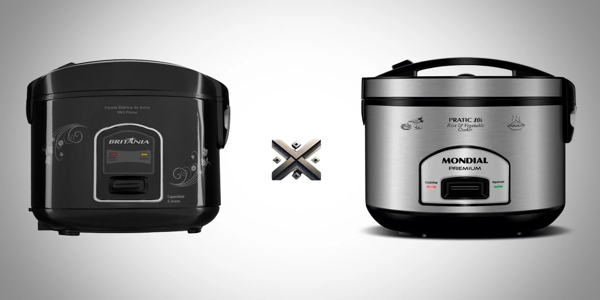

Escolher a panela de arroz elétrica ideal pode ser desafiador, especialmente ao considerar modelos populares como a Britânia PA5 Prime e a Mondial 10i. Ambas oferecem praticidade e eficiência, mas possuem diferenças significativas em capacidade, funcionalidades e design. Este artigo detalha essas características para auxiliá-lo na melhor decisão de compra.
Além do desempenho, fatores como o tamanho da família, o espaço disponível na cozinha e a frequência de uso também devem ser considerados na escolha. Esses pontos ajudam a garantir que o modelo atenda às suas necessidades do dia a dia.

A Britânia PA5 Prime é uma opção compacta e eficiente para quem busca praticidade no preparo de arroz.
Com capacidade para até 5 xícaras de arroz, equivalente a 1,2 litros, é ideal para pequenas famílias ou indivíduos que preparam porções menores. Essa medida supre bem as necessidades de quem cozinha apenas o essencial. É perfeita também para quem busca controlar a dieta ou manter o arroz sempre fresco, sem sobras do dia anterior. Além disso, sua cuba interna é bem distribuída, permitindo o cozimento uniforme dos grãos. Mesmo sendo menor que outros modelos, não compromete na qualidade do resultado. Ideal para quem tem pouco espaço na cozinha ou busca um eletrodoméstico mais leve e fácil de armazenar. Outra vantagem é que sua menor capacidade torna o tempo de cozimento mais rápido, o que economiza energia e tempo.
Opera com potência de 400W e consumo aproximado de 0,4 kWh, equilibrando desempenho e eficiência energética. É uma potência suficiente para garantir o cozimento completo do arroz sem riscos de queimar. Isso também se reflete na segurança durante o uso, já que há menos aquecimento externo. A eficiência energética desse modelo contribui diretamente para a economia na conta de luz, tornando-a uma boa escolha para quem cozinha com frequência. Para um uso diário, o custo-benefício é excelente, já que seu desempenho é satisfatório sem exigir alta demanda de energia. Essa potência, somada à estrutura do produto, faz com que o arroz fique no ponto certo, sem necessidade de supervisão constante. O sensor interno ainda ajuda a controlar automaticamente o tempo de cozimento, desligando no momento ideal.
Disponível na cor preta, apresenta design moderno que se adapta a diversas cozinhas. O preto fosco ajuda a disfarçar manchas e sujeiras do uso diário, exigindo menos manutenção estética. A estrutura é compacta, o que facilita o manuseio e armazenamento em armários pequenos. Além disso, o painel é intuitivo, com botões claros e fáceis de usar. Ideal para pessoas que não querem complicações na hora de operar o aparelho. Ainda que a cor preta seja a única disponível na maioria das lojas, sua aparência neutra combina com diferentes decorações de cozinha. Ela também possui alças laterais que facilitam o transporte, tornando o design funcional além de esteticamente agradável.
O preço varia conforme o varejista, mas geralmente encontra-se na faixa de R$ 119,90 a R$ 169,99. O custo-benefício da PA5 Prime é um dos seus maiores atrativos, principalmente considerando sua durabilidade e desempenho confiável. Além disso, seu preço acessível permite que mais consumidores tenham acesso à praticidade de uma panela elétrica, sem comprometer o orçamento. Outro ponto importante é que mesmo com o preço mais baixo, a Britânia mantém um padrão de qualidade que garante a vida útil do produto por vários anos, desde que bem conservado.
A Mondial 10i é projetada para atender famílias maiores ou para quem necessita preparar maiores quantidades de arroz.
Comporta até 10 xícaras de arroz, adequada para refeições em maior escala. Isso faz dela a melhor escolha para casas com mais de três pessoas ou para quem costuma receber visitas com frequência. Sua cuba ampla é ideal também para preparar receitas diferentes, como risotos, legumes no vapor ou até sopas. Essa versatilidade aumenta o valor agregado do aparelho, que deixa de ser apenas uma panela de arroz e passa a ser um auxiliar completo na cozinha. Além disso, a distribuição interna da Mondial 10i favorece o cozimento uniforme, mesmo quando cheia. O arroz cozinha por igual, sem partes cruas ou queimadas. Outro ponto positivo é que, apesar da maior capacidade, o tempo de cozimento é rápido graças à sua potência de 700W.
Possui potência de 700W, oferecendo cozimento rápido e eficiente. Essa potência faz com que o arroz fique pronto em menos tempo, ideal para rotinas corridas. Por outro lado, exige um pouco mais de atenção ao consumo energético, que será maior se comparado a modelos menores. Ainda assim, a Mondial 10i é considerada econômica dentro de sua categoria, principalmente quando se considera a quantidade de alimento preparada por ciclo. A potência mais alta também permite manter a temperatura do arroz por mais tempo, sem ressecar. Seu sistema de aquecimento contínuo mantém os grãos macios e soltos mesmo após horas do preparo. Essa performance constante é um diferencial para quem valoriza praticidade e qualidade em todas as refeições.
Disponível em cores variadas, como branco e vermelho, permitindo escolha conforme a preferência do usuário. O acabamento brilhoso dá um toque moderno ao produto, enquanto as opções de cor facilitam a combinação com outros eletros da cozinha. O modelo em vermelho, por exemplo, é uma escolha ousada que se destaca em ambientes claros. Já o branco transmite uma sensação de limpeza e organização. A estrutura da Mondial 10i é robusta, mas bem pensada para caber em bancadas sem ocupar espaço excessivo. Possui alças largas para facilitar o transporte e uma tampa com pegador ergonômico que evita acidentes. O visual moderno também é um atrativo para quem gosta de unir praticidade à estética na hora de montar uma cozinha funcional.
O valor da Mondial 10i geralmente está entre R$ 150,00 e R$ 200,00, dependendo do ponto de venda e promoções vigentes. Em compras online ou físicas, é possível encontrar esse modelo com descontos progressivos. Considerando sua capacidade, é uma opção com excelente relação custo-benefício para famílias maiores. Além disso, seu preço competitivo frente a modelos com as mesmas funcionalidades faz dela uma das mais procuradas na categoria. A qualidade dos materiais usados também garante maior durabilidade, justificando o investimento. Para quem busca eficiência e volume em um único produto, essa panela entrega muito pelo que custa.
Chegamos ao ponto onde é preciso pesar cada detalhe. Quando analisamos a Britânia PA5 Prime e a Mondial 10i lado a lado, percebemos que ambas oferecem ótimo custo-benefício, mas para públicos diferentes. A Britânia PA5 Prime se destaca pela praticidade, ideal para quem mora sozinho ou com até duas pessoas. Sua capacidade menor e potência reduzida são compensadas por economia de energia e um design mais compacto e discreto. Já a Mondial 10i brilha em famílias maiores ou em lares onde o arroz é preparado em maior volume. Seu desempenho é consistente e o acabamento visual traz um diferencial na cozinha. Ambas têm funcionalidades semelhantes, como antiaderente e função aquecer, mas a Mondial ganha pontos pela robustez e pela presença do coletor de água. Se o objetivo é economia e simplicidade, vá de Britânia. Se a ideia é versatilidade e rendimento, Mondial pode ser o melhor investimento. Pense também no espaço disponível e no estilo da sua cozinha antes de decidir.
| Característica | Britânia PA5 Prime | Mondial 10i |
|---|---|---|
| Capacidade | 5 xícaras (1,2L) | 10 xícaras |
| Potência | 400W | 700W |
| Consumo | 0,4 kWh | Moderado (estimado) |
| Cores Disponíveis | Preto | Branco, Vermelho |
| Revestimento Antiaderente | Sim | Sim |
| Função Manter Aquecido | Sim | Sim |
| Tampa com Saída de Vapor | Sim | Sim |
| Coletor de Água | Sim | Sim |
| Acessórios | Copo medidor e espátula | Copo medidor e colher |
| Faixa de Preço | Média-baixa | Média |
Independentemente do modelo escolhido, a limpeza correta garante a durabilidade e a segurança no uso diário. Comece sempre desligando o aparelho da tomada e espere esfriar por completo. Retire a cuba interna e lave com esponja macia e detergente neutro. Nunca use produtos abrasivos ou palha de aço, pois isso danifica o revestimento antiaderente. Se restos de comida estiverem grudados, deixe de molho com água morna por alguns minutos antes de limpar. Os acessórios, como colher e copo medidor, também devem ser lavados com água e sabão. A parte externa deve ser limpa apenas com um pano úmido — nunca submerja a base elétrica. Também é importante verificar o coletor de água (no caso da Mondial) e esvaziá-lo após cada uso. Manter os orifícios de ventilação livres de sujeira também evita superaquecimento. Guardar a panela seca e em local ventilado evita odores e mofo. Com esses cuidados, a sua panela estará sempre pronta para o próximo preparo.
A principal diferença está na capacidade: a Britânia PA5 prepara até 5 xícaras, enquanto a Mondial 10i comporta 10. A Mondial também possui maior potência e recursos como o coletor de água.
A Britânia PA5 se destaca em custo-benefício para quem busca simplicidade. Já a Mondial 10i compensa para quem precisa de mais volume e funções extras.
Sim. Ambas permitem preparar legumes no vapor, sopas leves e alguns modelos até risotos. Basta seguir as instruções e adaptar as receitas à capacidade do aparelho.
Para quem vive só ou em casal, a Britânia PA5 Prime é mais indicada. Compacta, econômica e fácil de guardar.
A escolha entre Britânia PA5 Prime e Mondial 10i depende de fatores práticos, como o número de pessoas na casa, a frequência de uso e o espaço disponível na cozinha. Se você busca algo simples, compacto e eficiente para porções menores, a PA5 Prime vai te atender muito bem. Por outro lado, se precisa de mais capacidade, velocidade no preparo e versatilidade para outras receitas além do arroz, a Mondial 10i é uma excelente pedida. Ambas têm desempenho sólido e trazem os recursos básicos necessários para o dia a dia, com algumas diferenças em design e potência. O importante é alinhar sua escolha às suas reais necessidades e garantir que o investimento feito traga mais praticidade à rotina. Com qualquer uma delas, o arroz soltinho e no ponto certo está garantido — com pouco esforço e muito mais tempo livre na cozinha.
Se você achou útil nossas dicas sobre as qual panela elétrica escolher ou ainda tem dúvidas, ficaremos felizes em ouvir sua opinião. Há algo que não entendeu ou gostaria de sugerir melhorias? Convidamos você a participar da nossa sessão de comentários no blog do Comparativos X.
 Top 5 Sanduicheiras de Melhor Custo-Benefício em 2025
Top 5 Sanduicheiras de Melhor Custo-Benefício em 2025 As 5 Melhores Jarras Elétricas de 2025: Praticidade e Eficiência
As 5 Melhores Jarras Elétricas de 2025: Praticidade e Eficiência Os 5 Melhores Grills Elétricos Mais Eficientes de 2025
Os 5 Melhores Grills Elétricos Mais Eficientes de 2025